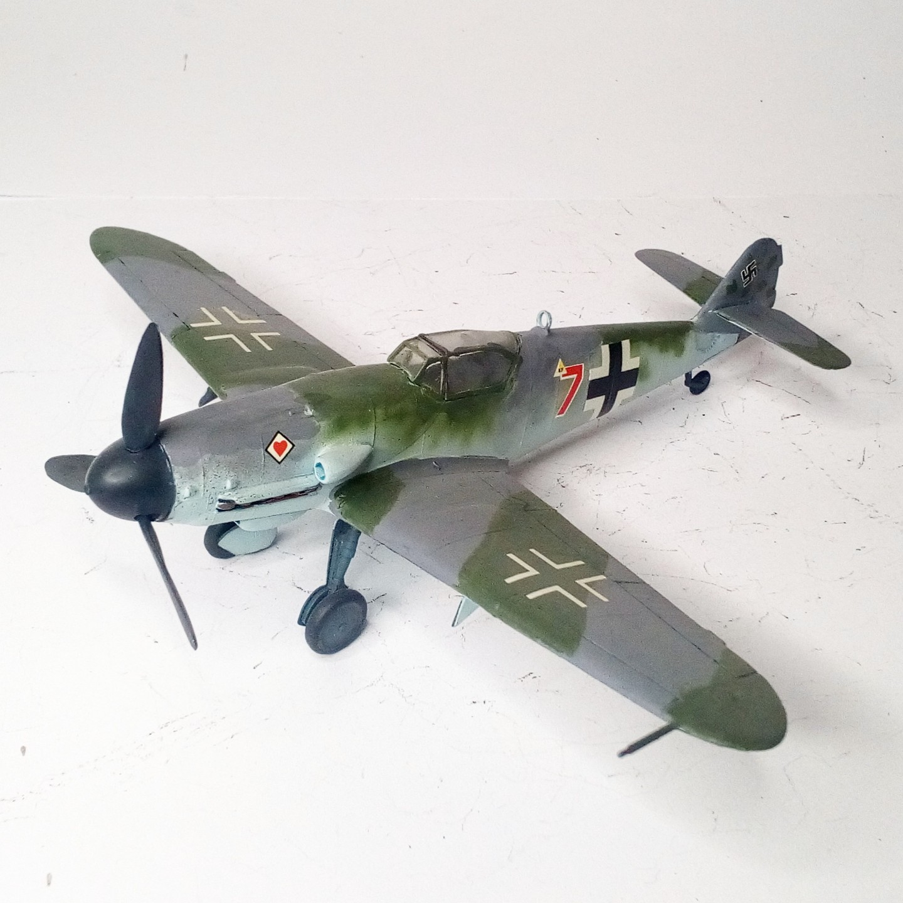
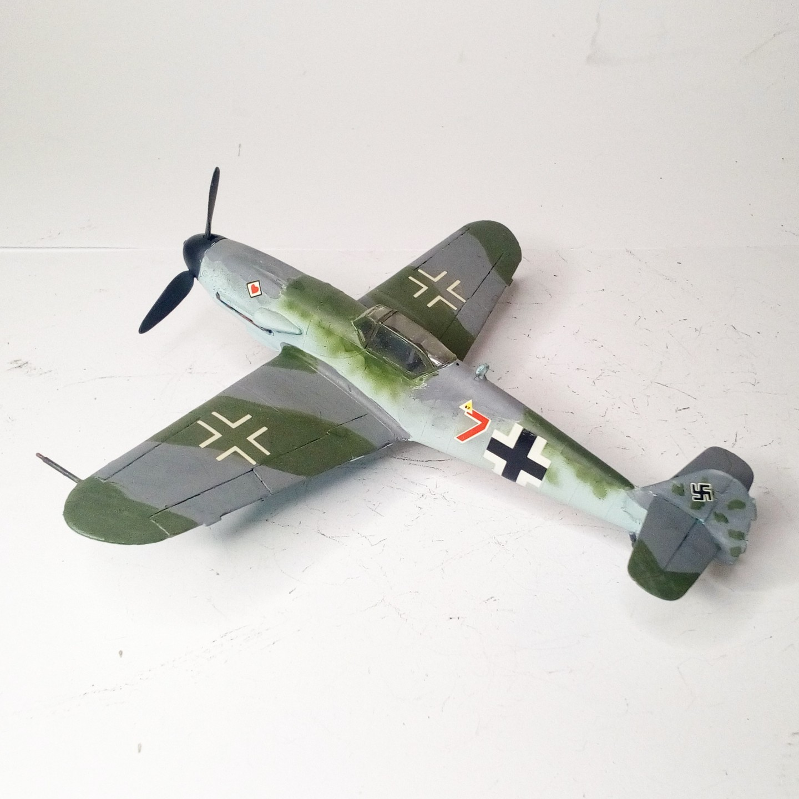

Aerei · scale model archive
Messerschmitt Me109 K4
Messerschmitt Me109 K4 — Kit: Heller, Scale: 1/72 #Me109K. JG77 'Hertz-As' Great work by Heller in producing this rare late variant of the Me109! #1/72…

Photo gallery

English description
JG77 'Hertz-As'
Great work by Heller in producing this rare late variant of the Me109!
#1/72 #Heller
Descrizione italiana
JG77 “Hertz-As”. Ottimo lavoro da parte di Heller nel produrre questa rara variante tarda del Me109.